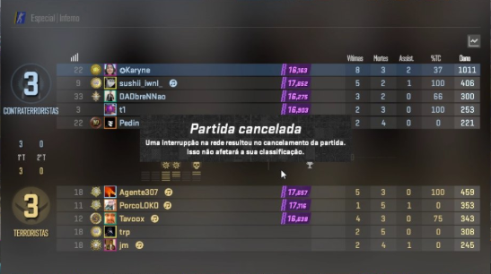

Partidas
15/06/2025
Era uma noite fria de domingo. O time vinha pilhado após uma derrota para wallhack na Inferno, e uma partida pífia na Dust 2. Eis então que surge o mapa menos jogado pelo time: NUKE! Contrariando todas as probabilidades, ele, o que menos gosta e conhece Nuke, aparece para nos trazer a vitória! The Donkey brilhou, e brilhou e brilhou com vários clutchs, distribuiu dano, e matou mais que a *insira uma doença letal*! The Donkey venceu rounds outrora considerados perdidos. Trouxe a esperança em uma batalha disputada, e cavalgou com seu time para a vitória! Contra tudo e contra todos, The Donkey fez o impossível: Uma vítoria na Nuke, e em um Domingo!